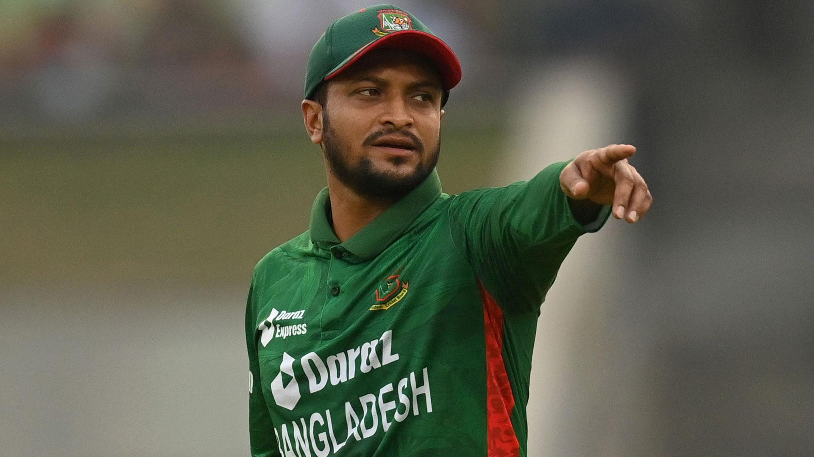
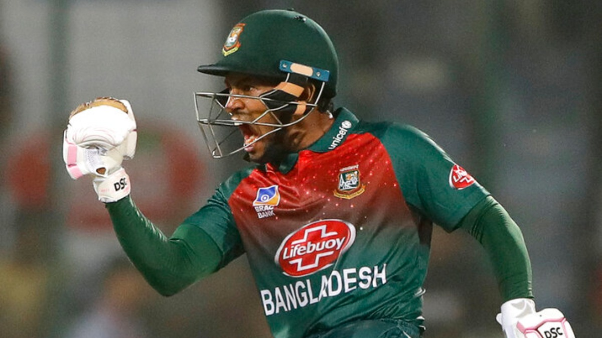

CRICKETERS
Shakib Al Hasan
Shakib Al Hasan is without a doubt the biggest name to have emerged from Bangladesh cricket circles. Being a genuine all-roundeer Shakib is a vital cog in Bangladesh's line-up. He has been a consistent performer for his country, over the years. Shakib first came into notice when he played cricket for several villages near his hometown of Magura. He spent time honing his skills at a government run sports facility and was picked for the Under-19 squad for the tri-series featuring England and Sri Lanka. He scored a 86-ball century and picked up three wickets in the final to help the team defeat Sri Lanka. This earned him selection for the series against Zimbabwe.
Mushfiqur Rahim
Career Information Test debutvs England at Lord's, May 26, 2005Last Testvs Afghanistan at Shere Bangla National Stadium, Jun 14, 2023ODI debutvs Zimbabwe at Harare Sports Club, Aug 06, 2006Last ODIvs Afghanistan at Zahur Ahmed Chowdhury Stadium, Jul 11, 2023T20 debutvs Zimbabwe at Sheikh Abu Naser Stadium, Nov 28, 2006Last T20vs Sri Lanka at Dubai International Cricket Stadium, Sep 01, 2022ProfileAn absolute livewire behind the stumps, Mushfiqur Rahim, fits the clichéd description of wicket-keepers aptly. He is short, very quick behind the stumps, always chuntering away and a brilliant batsman as well. He was initially picked as an understudy to Khaled Mashud for the tour of England in 2005, but as he impressed everyone with his competence with the bat in the tour games, he was made to play as a specialist batsman in the first Test at the age of 16. He thus became the youngest player to play at Lord's. An ankle injury forced him out of the side for a while before being recalled to the side for the tour of Zimbabwe in 2006